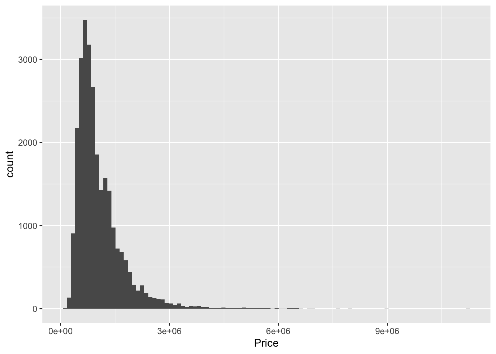
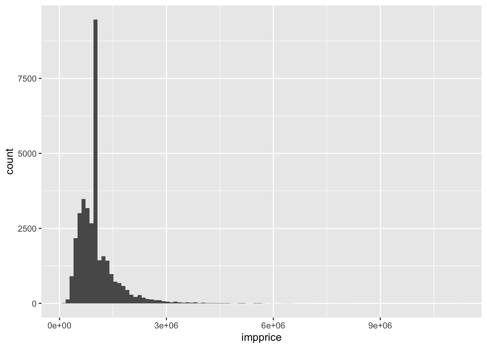
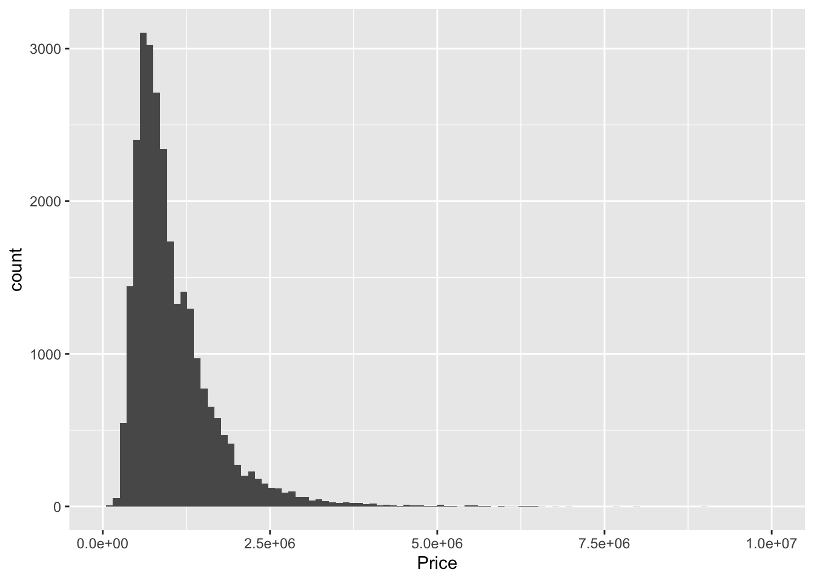
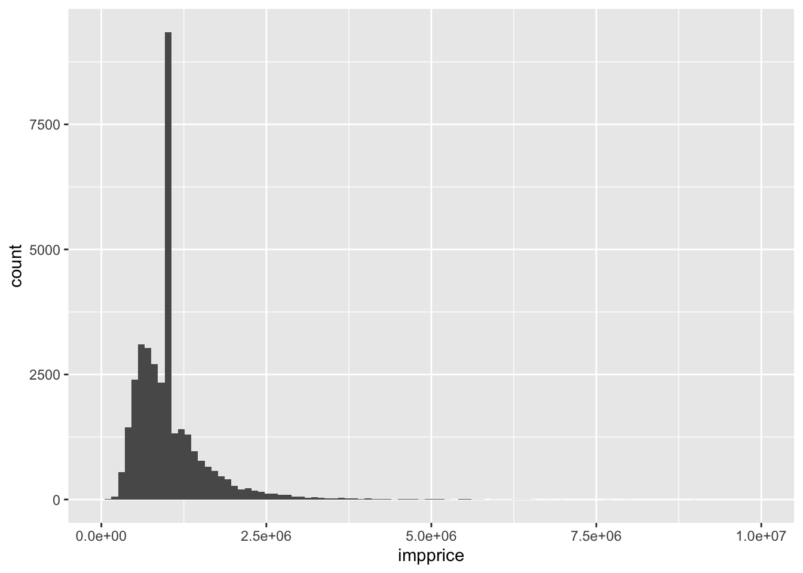
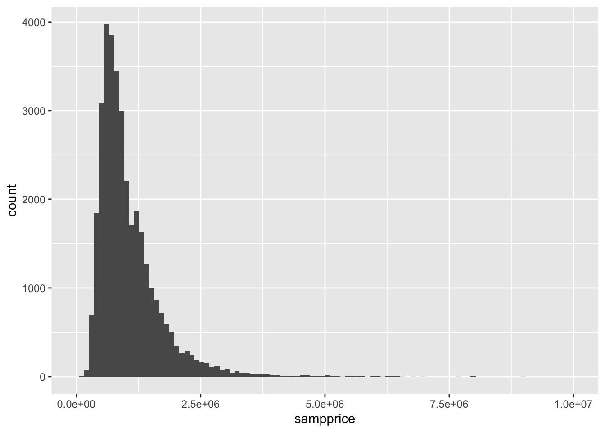

Data from the real world is not perfect. As we’ve discussed before, errors can permeate a dataset. However, a good data scientist does not need a dataset to be perfect. Several methods exist for estimating what a data set should look like, with varying degrees of crudeness.
In general, the process of preparing your data before you start making figures and models is called data cleaning. For this lab, we’ll be dealing with cleaning dataset with numeric entries. We’ve already done a bit of cleaning in previous datasets. For instance, we identified entries in patients with BMI or glucose levels of zero. Certainly, such entries are nonsense, but for all we know, there could have been more. For instance, what if we found a BMI of 500? Or a BMI simply labeled “yes”? In general, a good domain knowledge is very helpful in determining reasonable ranges for your variables.
In other cases, it just makes sense to pare down your data and possibly throw some of it away. To the newcomer, this might seem odd. Isn’t more data always better? The answer is an emphatic no. More relevant data is better, but data which is useless can simply get in the way. A popular example of this appears in text data. If you were given a copy of War and Peace and asked to identify key phrases found in the book that don’t appear elsewhere, it doesn’t make sense to have to deal with words like “the” or “and”. A proper data cleaning might just snip these stop words out before getting to more serious endeavors.
We’ll be working with the “Melbourne Housing” dataset, which lists information regarding housing prices and features (make sure you include the heading when downloading this dataset). You can get more information about this dataset on the associated Kaggle page (Kaggle is a fun website that hosts data science competitions.)
Perhaps the most asked question for someone searching for a house in Melbourne is what a house goes for in the area.
mean(Melbourne_housing_FULL$Price)## [1] NAIt looks like we have an incomplete dataset (surprise, surprise). The answer of NA is technically correct, since even a single NA means that we don’t actually know the average house price. We need to include the na.rm argument to calculate the average house price for housing that have a known value. Let’s find some other statistics as well:
mean(Melbourne_housing_FULL$Price, na.rm = TRUE)## [1] 1050173median(Melbourne_housing_FULL$Price, na.rm = TRUE)## [1] 870000range(Melbourne_housing_FULL$Price, na.rm = TRUE)## [1] 85000 11200000Note that prices are given in Australian dollars, so things look a little more expensive to an American than they actually are.
Q: What’s the difference between mean and median? What can be the cause for the median to be significantly less than the mean?
How many houses don’t have prices?
sum(is.na(Melbourne_housing_FULL$Price))/length(Melbourne_housing_FULL$Price)## [1] 0.2183206About 22% of houses don’t have prices. There are several options of what to do with these entries.
If exact house prices are absolutely crucial, then we should just throw away those rows containing an NA. Using dplyr should come in handy here. Also, let’s further restrict our data to just include the Suburb and price:
Melbourne_housing_FULL %>% select(Suburb, Price) %>% filter(!is.na(Price)) %>% head## Suburb Price
## 1 Abbotsford 1480000
## 2 Abbotsford 1035000
## 3 Abbotsford 1465000
## 4 Abbotsford 850000
## 5 Abbotsford 1600000
## 6 Abbotsford 941000Q: What’s the point of the exclamation point? Also, why can’t we just type in Price != NA?
Let’s check the mean price of our new dataset. We shouldn’t need to include any na.rm argument.
newmel = Melbourne_housing_FULL %>% select(Suburb, Price) %>% filter(!is.na(Price))
mean(newmel$Price)## [1] 1050173If we would like to plug in values, a quick fix is to simply plug in the mean or median value. This is often done with modeling. We may, for instance, like to estimate what suburb a house is located in given all of our other variables as input. The fifth of the dataset not containing prices contains other information that could be worthwhile for building the model, so it might be better to put in a shoddy guess for price rather than throwing the entire row away. Let’s create a new dataset containing such a column:
#Let's copy the original dataset in preparation for making
#a new one
newermel = Melbourne_housing_FULL
#create a for loop that replaces NA with mean
impprice = rep(0, dim(newermel)[1])
for (i in 1:length(impprice)){
if (is.na(Melbourne_housing_FULL$Price[i])){
impprice[i] = mean(Melbourne_housing_FULL$Price, na.rm = TRUE)
} else{
impprice[i] = Melbourne_housing_FULL$Price[i]
}
}
#Making a new row now is easy.
newermel$impprice = impprice
mean(Melbourne_housing_FULL$Price, na.rm = TRUE)## [1] 1050173mean(newermel$impprice)## [1] 1050173Q: Can you convince yourself that the means should be the same?
This is a nice feature about imputing with the mean for every value. However, things look a bit quirky when looking at the new distribution of housing prices.
Melbourne_housing_FULL %>% ggplot()+ geom_histogram(aes(Price), bins = 100)## Warning: Removed 7610 rows containing non-finite values (stat_bin).
newermel %>% ggplot()+ geom_histogram(aes(impprice), bins = 100) 
Maybe now’s a good time to talk about getting better x labels. Clearly, we need fewer ticks
Melbourne_housing_FULL %>% ggplot()+ geom_histogram(aes(Price), bins = 100)+xlim(0, 10^7)## Warning: Removed 7611 rows containing non-finite values (stat_bin).## Warning: Removed 2 rows containing missing values (geom_bar).
newermel %>% ggplot()+ geom_histogram(aes(impprice), bins = 100) +xlim(0, 10^7)## Warning: Removed 1 rows containing non-finite values (stat_bin).
## Warning: Removed 2 rows containing missing values (geom_bar).
Q: What happens when you adjust the number of bins? Any guesses on what type of quantity would capture what happens when data clumps together?
The clumping we see could be explained by the variance, or its cousin, the standard deviation, which is simply the square root of the variance.
sqrt(var(Melbourne_housing_FULL$Price, na.rm = TRUE))## [1] 641467.1sqrt(var(newermel$impprice))## [1] 567135.7The main rule of thumb: the larger the variance, the more spread out the data. Plugging in a single value over and over again at the mean is going to make values more scrunched up on average.
One way to get around producing the unsightly point mass in the last example is to randomly sample your data.
newestmel = Melbourne_housing_FULL
sampprice = rep(0, dim(newestmel)[1])
for (i in 1:length(sampprice)){
if (is.na(Melbourne_housing_FULL$Price[i])){
sampprice[i] = sample(newmel$Price, 1)
} else{
sampprice[i] = Melbourne_housing_FULL$Price[i]
}
}
#Making a new row now is easy
newestmel$sampprice = sampprice
mean(newestmel$sampprice)## [1] 1050080mean(Melbourne_housing_FULL$Price, na.rm = TRUE)## [1] 1050173sqrt(var(newestmel$sampprice))## [1] 640556.5sqrt(var(Melbourne_housing_FULL$Price, na.rm = TRUE))## [1] 641467.1There’s minor bad news and substantial good news. The bad news is that sampling is going to result in a slightly different mean than what we originally have. It’s possible to prove that the difference approaches zero as the size of the dataset gets larger and larger. Our dataset is pretty large (about 35,000 rows), so our average is pretty small, on the order of a couple of thousands. The good news is quite nice. The variances between the two datasets are also quite small. We can also take a look at the histograms to get a better picture:
Melbourne_housing_FULL %>% ggplot()+ geom_histogram(aes(Price), bins = 100)+xlim(0, 10^7)## Warning: Removed 7611 rows containing non-finite values (stat_bin).## Warning: Removed 2 rows containing missing values (geom_bar).newestmel %>% ggplot()+ geom_histogram(aes(sampprice), bins = 100) +xlim(0, 10^7)## Warning: Removed 1 rows containing non-finite values (stat_bin).
## Warning: Removed 2 rows containing missing values (geom_bar).